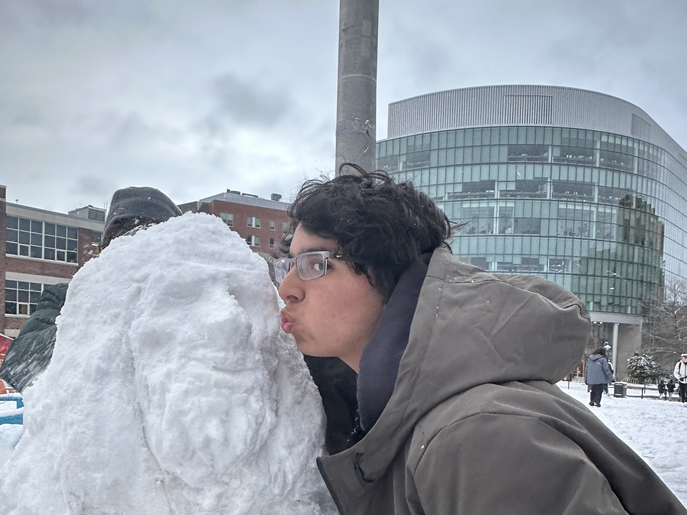

Hey there! My name is Mateo and I am a second year Mechanical Engineering student at Northeastern University. I was born in Venezuela and moved to the U.S. when I was 6 years old, lived in New York state for three years, and then moved to Greenwich, Connecticut, where I graduated from Greenwich High School in 2023. At my middle school, all students were required to take an engineering class, but the teacher was unreasonably strict and the assignments were tedious, so I thought I hated engineering for most of my high school career.

About Me

Instead, I pursued art in high school, taking four art classes and participating in art summer programs at Tufts University and The New School, an art school in New York City. When college enrollment season came around, I decided that I didn’t want to pursue art professionally because I had doubts about my skills and future job prospects, so I figured I would apply to Northeastern’s explore program for undeclared students.


Applying to Northeastern was a no-brainer for me since the application didn’t have any supplemental essays, which I didn’t like writing at the time since they often entailed pretending to be passionate about an academic field. Many of my friends and family suggested that I should try an engineering course, so I decided to take Cornerstone of Engineering in my first semester.
It was pretty normal at first: we built pasta bridges, learned some AutoCAD, and learned about the engineering design process. The first thing that sparked my interest was when we started learning Arduino with Sparkfun kits. Our professor had weekly assignments where we had to combine circuitry elements from different lessons. I would pour my heart and soul into these assignments and create all kinds of diabolical circuits.


The moment I fell in love with engineering was when we first learned about Solidworks. The more I learned, the more I became interested in features such as assemblies, relations, and hole wizard. I switched my major to Mechanical Engineering and have since worked on different projects, involving CAD, 3D printing, soldering, laser cutting and more. I haven’t been an engineer for as long as some people, but I am always actively searching for opportunities to improve my technical skills and add to my experience.